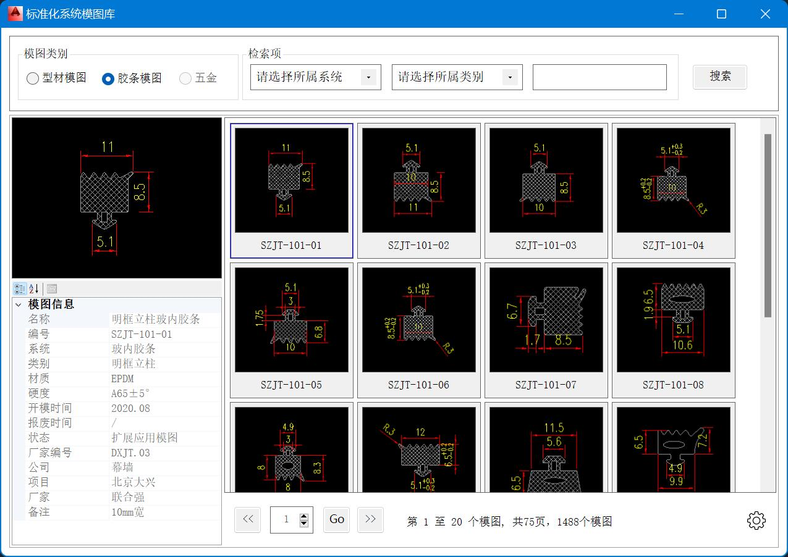

DWGLibrary For AutoCAD插件介绍

DWGLibrary For AutoCAD 软件界面
软件开发背景及意义
软件主要功能介绍
软件开发重难点介绍
软件打包
所谓软件打包，就是将已开发好的程序封装成可供用户直接使用的软件安装包（msi或exe）的过程。相对于软件开发而言，软件打包（package）并不算是一个难点，之所以说难，是因作为一个开发者，难以全过程的接触从软件开发、调试再到软件打包分发的整个过程。在Windows平台上，生成软件安装包的方式有多种：
- 使用Visual Studio创建"Installer"工程实现软件打包，但该方法步骤相对繁琐且不够轻便，优点是可定制性强;
- 使用第三方如
NISS（免费）、innoSetup（免费）、installshield（收费）等打包软件进行打包生成软件安装包，此方法方便快捷。对于前两者还需要打包者有一定的编程经验;
在本项目中，使用的是innoSetup
DWG图块缩略图显示
关于DWG缩略图显示有两种方法
- 直接通过AutoCAD内置的方法
CMLContentSearchPreviews获取; - 每个图块预先生成的slides（sld）文件，解析sld文件并使用GDI生成图片;
第一种方法相对比较简单，但缺点也很明显，就是无法获取图块的高清缩略图，且往往无法准确获取图块的缩略图，同时效率较低。
/*
using Autodesk.AutoCAD.Windows.Data;
using System.Windows.Media.Imaging;
*/
public Bitmap GetBTRThumnail()
{
BitmapSource bs = CMLContentSearchPreviews.GetBlockTRThumbnail(btr) as BitmapSource;
return BitmapSrcToBitmap(bs);
}
private Bitmap BitmapSrcToBitmap(BitmapSource bs)
{
var ms = new MemoryStream();
var encoder = new System.Windows.Media.Imaging.BmpBitmapEncoder();
encoder.Frames.Add(System.Windows.Media.Imaging.BitmapFrame.Create(src));
encoder.Save(ms);
ms.Flush();
return System.Drawing.Image.FromStream(ms) as Bitmap;
}
使用AutoCAD内置方法读取BlockTableRecord缩略图信息